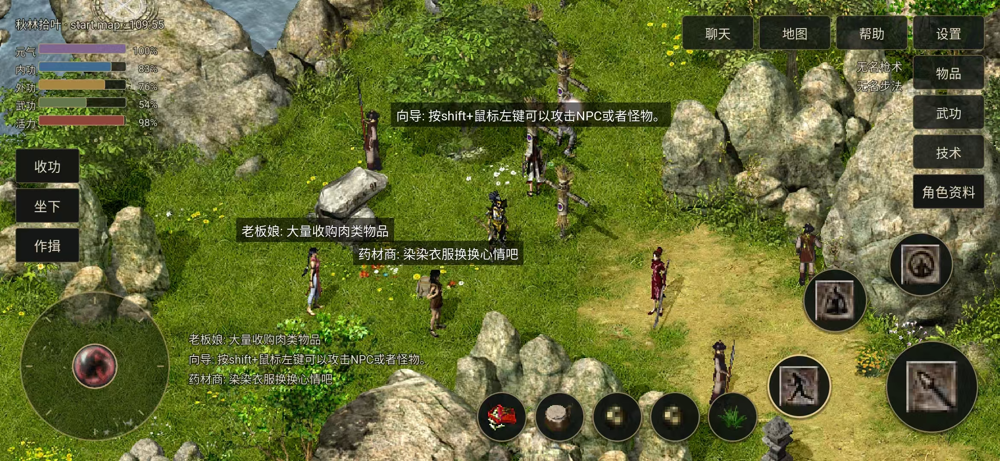

客户端下载
选择适合你的设备。电脑版与手机版共用炎黄账号和角色。
炎黄新章 · Android 手机版
正式版 · 开放玩家体验熟悉的千年，现在掌中相见。
左手轮盘持续移动，触控选择目标，8 个快捷槽自由搭配物品与武功。把熟悉的千年，带到掌中。
- 双端互通
- 手机与电脑版共用炎黄账号、角色和物品，换个设备接着玩。
- 宽屏视野
- 横屏场景随屏幕比例展开，悬浮菜单为地图留出更多空间。
- 地图寻路
- 选中当前地图的红点，一键自动前往；轮盘操作随时接管。
- 内置辅助
- 按需开启自动吃药、附近物品拾取和挂机巡逻；技术窗支持设置次数连续制造。
- 发行版本
- 最新正式版
- 安装包
- APK · 建议使用 Wi-Fi 下载
- 设备要求
- Android 7.0 及以上，64 位 ARM 手机或平板
安卓设备直接下载 APK 安装。暂不提供 iPhone / iPad 版本。查看隐私政策。

安卓版实机画面
横屏触控 · 轮盘移动 · 自定义快捷槽
手机扫一扫，江湖随身行。
扫描二维码，下载安卓最新正式版。
已在手机上？点击下载按钮即可。
下载并安装
用安卓手机扫码，或点击本页下载按钮获取安装包；按系统提示，允许当前浏览器安装此应用后完成安装。
登录炎黄账号
打开“云端千年”，填写账号和密码。新玩家请先注册账号，再进入游戏创建角色。
接续你的江湖
老玩家选择已有角色即可进入游戏。切换设备前，先退出原设备上的游戏；更新时直接覆盖安装，保留本机设置。
体验中遇到问题，可在玩家 QQ 群 2887111 反馈，并附上版本号、手机型号及操作步骤。
炎黄新章 · Windows 电脑版
经典键鼠操作电脑版 · 云端新增功能
以下说明适用于 Windows 电脑版，更新完成后即可使用。下列命令在游戏聊天框中输入，按回车执行。
内置辅助
按 Ctrl + F12 打开辅助面板，也可输入 @@ 打开或关闭面板。
- 吃药、拾取：按各页开关勾选启用，设置自动保存。吃药须同时开启总开关及需要的单项。
- 技术：设置制造材料和次数，点“开始”运行，点“结束”停止。
- 挂机：选择模式并配置武功后，点“开始挂机”；“保存挂机”只保存设置，不会开始。结束时点“停止挂机”。
打开面板期间暂停辅助动作；关闭面板不等于停止辅助，已开启功能按设置继续。
调整分辨率 · 看得更广
改变游戏画面的显示范围，人物和界面元素保持原尺寸。
@resolution 640x480- 默认尺寸
@resolution 800x600- 中等画面
@resolution 1024x768- 大画面
保存后，退出并重新启动客户端才会生效。输入 @resolution 可查看当前及下次启动的设置。
显示器可用空间不足时，会提示并临时使用 640×480。
切换画面大小 · 看得更清楚
在窗口模式下按 Ctrl + F11，在原尺寸与放大画面之间切换，立即生效并记住设置。
人物、文字和界面一起放大。优先使用 200%，屏幕放不下时使用 150%；仍放不下则保持原尺寸并提示。
缩放只把画面变大，不增加地图视野；想看到更广的场景，请调整分辨率。
调整 FPS · 画面刷新率
默认上限为 60 FPS，输入以下任一命令可立即切换并保存，无需重启。
@fps 30@fps 60@fps 120@fps 144
输入 @fps 查看设置上限与当前实际帧率。实际帧率受电脑性能和场景复杂度影响，不一定达到所设上限。
提高 FPS 只调整画面刷新，不会加快移动、攻击或吃药。
神武奇章 · 电脑版
仅提供云端补丁请先准备好神武版客户端，将云端千年·神武奇章补丁解压到其游戏目录，覆盖同名文件后，运行 云端千年.exe 启动游戏。
账号注册：使用神武客户端中的快手直接注册账号，不使用本站的炎黄注册入口。
两版本补丁不能混用；神武补丁不能覆盖到上方的炎黄客户端中。